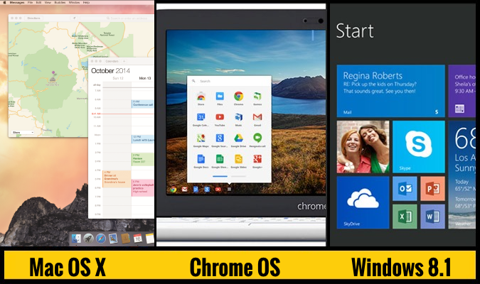
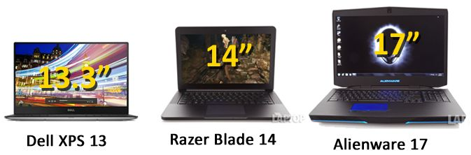
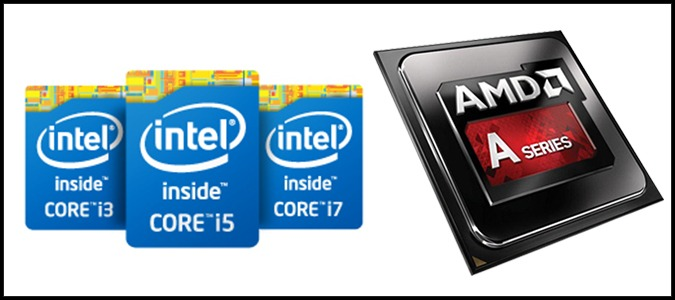
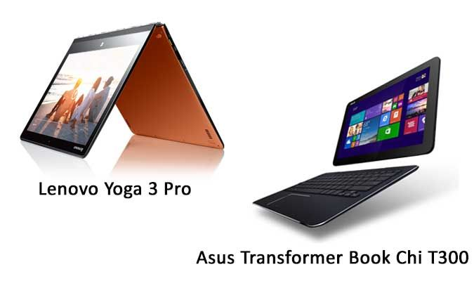
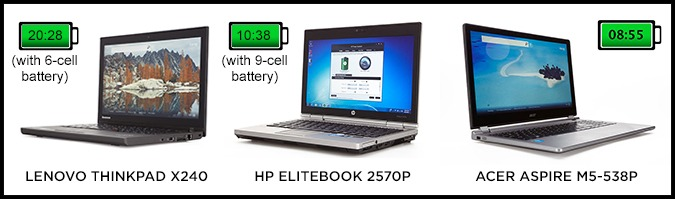

Laptop Lounge
Laptop Buying Guide: 8 Essential Tips

Compact enough to carry with you, yet versatile enough to run demanding applications, a laptop is the best tool for doing serious work or play at home and on the road. While standalone tablets and smartphones are always popular, most people realize that everything from typing a research paper to crunching video or gaming works better on a laptop. And holding on to a 4 or 5 year old model won’t cut it. So what type of laptop should you get?
There’s a wide variety of sizes, features, and prices, which makes choosing the right laptop a challenge. That’s why you need to figure out what your needs are. To make the right call, just follow these eight tips.
1. Pick a Platform: Mac, Windows or Chrome OS?
Windows notebooks are generally more affordable than Macs (starting under $400) and offer a much wider range of design choices from more than a dozen major vendors. Unlike Apple, Microsoft and its partners allow users to buy notebooks with touch screens, as well as convertible designs that let you easily transform from notebook to tablet mode.
MacBook Airs and MacBook Pros also tend to outclass most Windows machines when it comes to industrial design and the touchpad. While Windows PCs offer more software choices, Apple makes it easier to find and install programs with the Mac App Store. However, Apple’s notebooks start at $899.
Google’s Chrome OS is the simplest and most secure platform around, but can also feel a bit limited. The user interface looks a lot like traditional Windows with an application menu, a desktop and the ability to drag windows around. The main type window you’ll be using is the Chrome browser and most “applications” are simply shortcuts to web tools.
2. Choose the Right Size
Before you decide anything else, you need to figure out just how portable you need your laptop to be. Laptops are usually categorized by their display sizes
3. Check That Keyboard and Touchpad

The most impressive specs in the world don’t mean diddly if the laptop you’re shopping for doesn’t have good ergonomics. Does the keyboard have solid tactile feedback and enough space between the keys? Is the touchpad smooth to operate or jumpy?
The mouse buttons should provide a satisfying click and note feel mushy You should be able to zoom in and out with ease, as well as select text with the touchpad without the cursor skipping around.If you’re shopping for a Windows 8 notebook, test the touchpad to make sure that gestures don’t activate accidentally as you get close to the edges.
In general, Apple and Lenovo offer the best keyboards and touchpads. Dell and HP are generally pretty reliable in this category, too.
4. Know Your Specs
Notebook specs such as CPU, hard drive, RAM, and graphics chip can confuse even notebook aficionados, so don’t feel bad if spec sheets look like alphabet soup to you. What you need really depends on what you plan to do with your laptop. More intensive tasks such as 3D gaming and HD video-editing require more expensive components.
5. Decide if You Want a 2-in-1 or Traditional Notebook
Since the launch of Windows 8, we’ve seen a number of hybrid “2-in-1″ laptop designs that double as tablets. These include the Lenovo Yoga Pro 3, which has a screen that bends back 360 degrees to turn into a slate and systems with removable keyboards like the ASUS Transformer Book Chi, both of which are even thinner than a MacBook Air.
If you like the idea of occasionally using your laptop in slate mode, a convertible like the Yoga is a versatile choice. But if you want the flexibility of using your device as standalone tablet, a detachable design is best.
6. Don’t Skimp on Battery Life
Even if you only plan to move your laptop from the desk to the couch and the bed or from your cubicle to the conference room, battery life matters. Nobody wants to be chained to a power outlet, even if there’s a socket within reach. If you’re buying a 15-inch notebook, look for at least 4 hours of endurance. Those who plan to be fairly mobile should shop for notebooks that offer more than 6 hours of battery life, with 7-plus hours being ideal.
To determine a notebook’s expected battery life, don’t take the manufacturer’s word for it. Instead, read third-party results from objective sources, such as Laptop Mag’s reviews. . Your actual battery life will vary depending on your screen brightness and what tasks you perform (video eats more juice than web surfing).
7. Plan a Budget
These days, you can buy a usable laptop for under $500, but if you can budget more, you’ll get a system with better build quality, stronger performance and a better display.
8.Mind the Brand
Your laptop is only as good as the company that stands behind it. Accurate and timely technical support is paramount, which is why Laptop Mag evaluates every major brand in our annual Tech Support Showdown. This past year Apple came in first place, followed by HP and Samsung.
Support is only part of what makes a notebook brand worth your money. You also have to consider how the manufacturer stacks up to the competition in terms of design, value and selection, review performance, and other criteria. In our 2014 Best and Worst Laptop Brands report, Apple placed first, followed by Lenovo and ASUS.